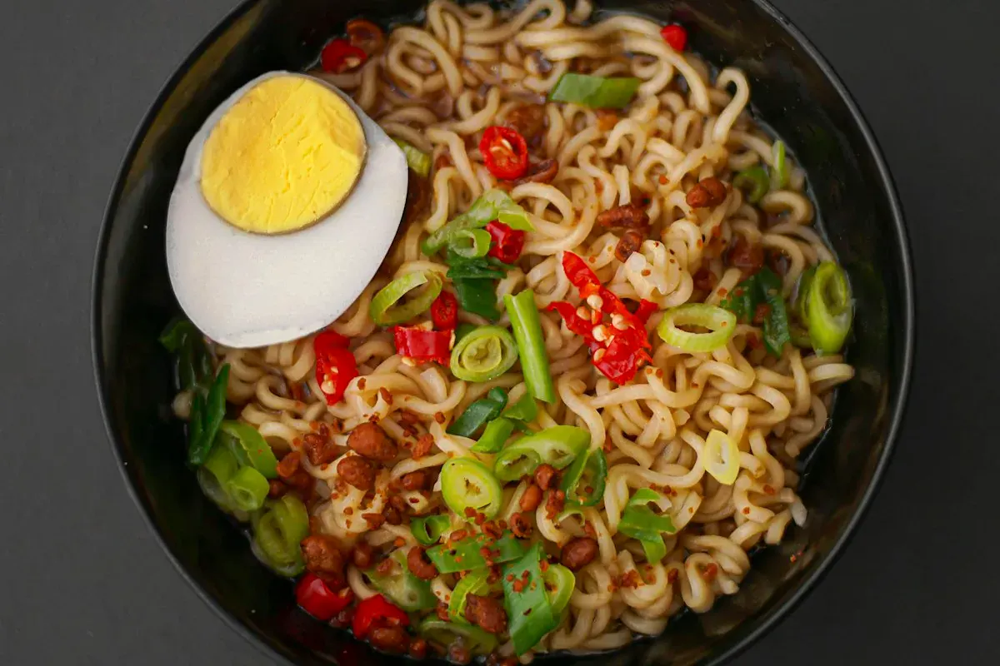

20-Minute Sesame Noodles

Sesame noodles are a twenty-minute dish that tastes like it took longer. A simple sauce of soy, toasted sesame oil, rice vinegar, brown sugar, garlic and ginger coats the noodles, and sliced green onions and sesame seeds go over the top.
The recipe serves four as a side or two as a main. It is equally good warm, at room temperature or cold from the fridge, which makes it useful for packed lunches and picnics.
Ingredients
- 12 oz noodles (spaghetti, udon, or lo mein noodles)
- 3 tbsp soy sauce
- 2 tbsp toasted sesame oil
- 1 tbsp rice vinegar
- 1 tbsp brown sugar
- 2 cloves garlic, minced
- 1 tsp fresh grated ginger
- 1/2 tsp chili flakes (optional)
- 2 green onions, thinly sliced
- 1 tbsp toasted sesame seeds
Instructions
- Bring a large pot of water to a boil and cook the noodles according to package directions. Drain and rinse briefly with cool water to stop the cooking.
- While the noodles cook, whisk together the soy sauce, sesame oil, rice vinegar, brown sugar, garlic, ginger, and chili flakes in a small bowl to make the sauce.
- Toss the drained noodles with the sauce until evenly coated.
- Divide among bowls and top with sliced green onions and toasted sesame seeds. Serve warm or at room temperature.
Why this recipe works
Toasted sesame oil is the backbone of the sauce, and it is added off the heat because it turns bitter when boiled. Rinsing the noodles briefly stops the cooking and removes surface starch so the sauce clings instead of turning gluey.
Tips for success
- Cook the noodles to just tender and rinse them in cool water to stop the cooking.
- Whisk the sauce until the sugar dissolves before tossing it with the noodles.
- Let the noodles sit for ten minutes before serving so they absorb the sauce.
Substitutions that work
- Spaghetti, udon, lo mein noodles or soba all work. Soba is a good gluten-free option if you check the label.
- Tamari can replace soy sauce for a gluten-free version.
- Add shredded chicken, edamame or julienned cucumber to make it a fuller meal.
Storage and make-ahead
Keeps covered in the refrigerator for three days. The noodles absorb the sauce as they sit, so loosen with a splash of water or a little more sesame oil before serving. Do not freeze.
Serving suggestions
Serve as a side with grilled salmon or beef stir fry, or as a light lunch on its own. A sprinkle of chili crisp and extra green onion is a good finish.
Balancing the sauce
The sauce should taste slightly too strong on its own, because the noodles will dilute it. Start with the soy, sesame oil and vinegar as written, then adjust: more sugar if it is harsh, more vinegar if it is flat, more sesame oil if it needs perfume. Toasted sesame oil is a finishing oil, not a cooking oil, so keep it off the heat. If you are making the dish ahead, hold back a quarter of the sauce and stir it in just before serving, which brings back the flavour the noodles absorbed overnight. A pinch of salt at the end often does more than extra soy.
Frequently asked questions
Can I serve sesame noodles warm?
Yes. Toss the hot noodles with the sauce and serve immediately, though the flavour is slightly stronger once the noodles cool.
How do I stop the noodles sticking together?
Rinse them after cooking and toss with a little sesame oil before adding the rest of the sauce.
What can I use instead of brown sugar?
Honey or maple syrup both work. Add a little at a time and taste, since the sweetness balances the soy and vinegar.